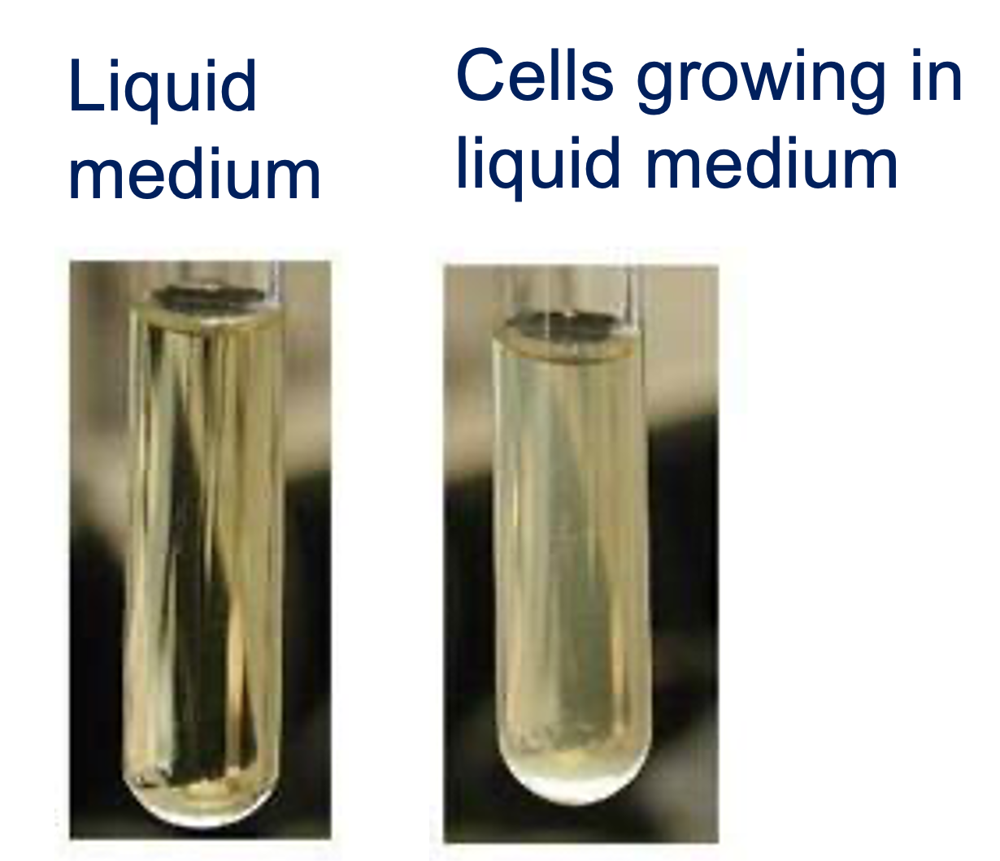
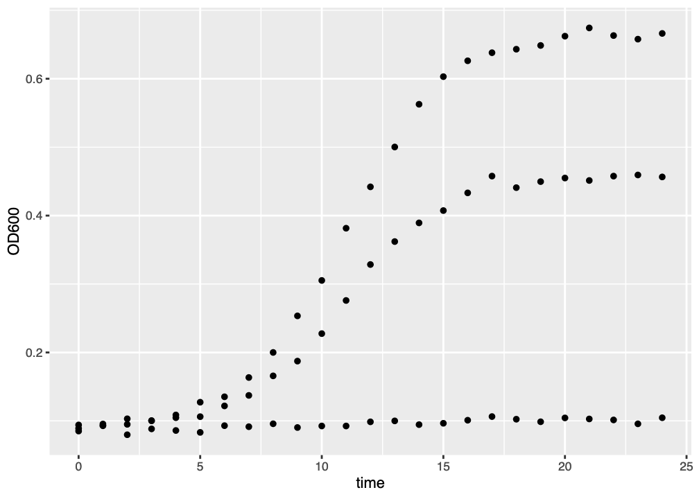
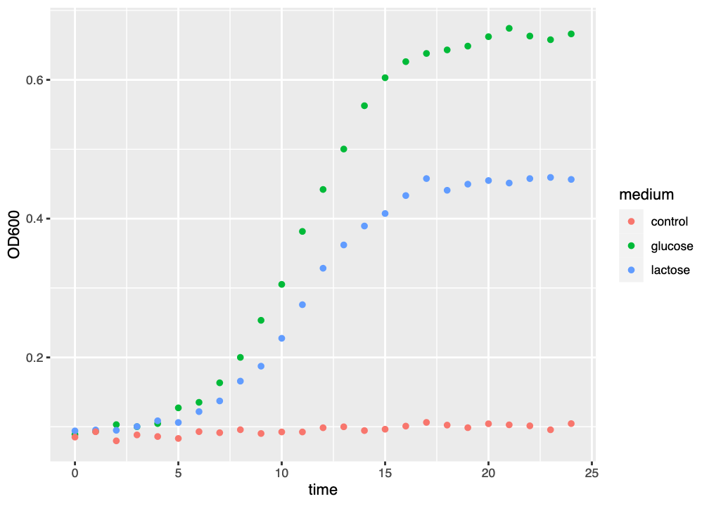
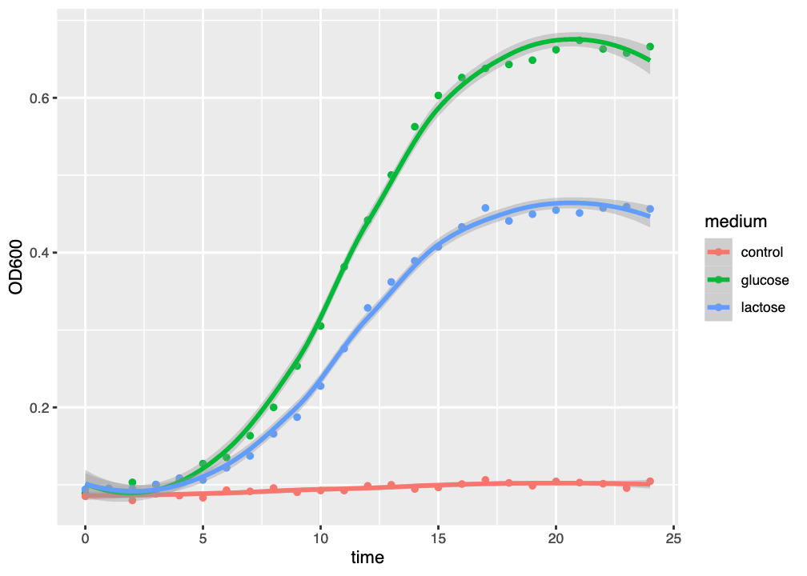
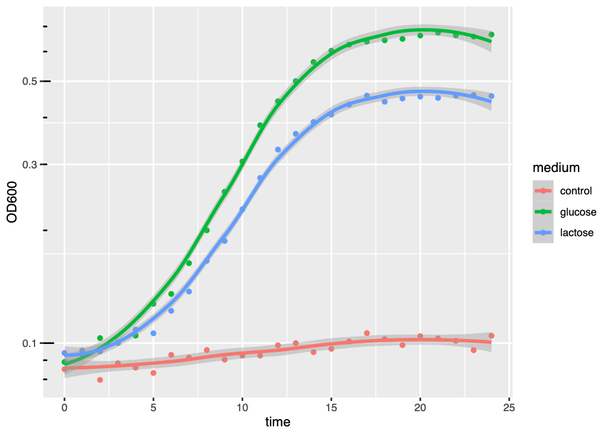
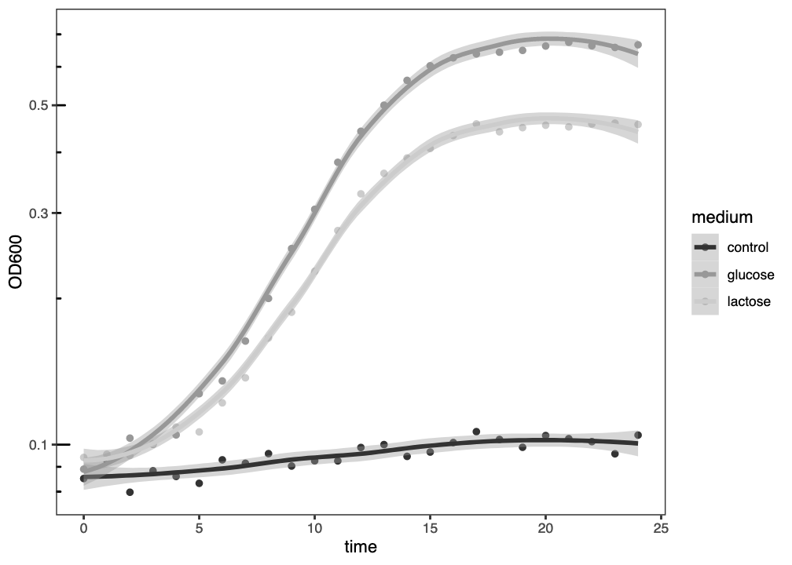

# Of course, you would substitute the name of your own file
data <- read.csv("AM_Bay_24_03.csv")2 Yeast Growth Experiment
2.1 Introduction
In this exercise you will use the absorbance data obtained from your yeast growth experiment in Laboratory 3 to draw growth curves for your three Saccharomyces cerevisiae strains, using the R language.
Why use
R?
There are many great tools capable of plotting your data (Numbers, Excel, Prism, GNUplot, Minitab, SPSS, MatLab, Python, JavaScript, etc.) and the choice of tool should in general reflect your data presentation needs, and your level of comfort with the tool.
Here, we use R because it is a very powerful means of carrying out many computational aspects of biology, including data visualisation, quickly and easily. Many of the topics you may meet later in your degree - phylogenetic, pharmacokinetics, microbial genomics, and so on - are supported by packages in R designed specifically for those subjects, and can make your work much easier. Also, skills in R are highly sought-after by industrial and other employers. Having some experience of R is an advantage.
R may be unfamiliar to you just now, but we provide step-by-step instructions for completing the exercise and, by the end of it, we hope you feel a bit more confident in how to use it.
In your experiment you saw that as the yeast grew in your liquid culture, the cuvette became turbid (Figure 2.1), proportionally to the density of cells in the culture. The turbidities of your samples were measured over a 24 hour period using a spectrophotometer, as optical density (OD600).

Important
In this part of the workshop, you will plot the absorbance of your control (no carbon), lactose, and glucose medium samples over time, using R.
2.2 Load and inspect your data
You will have been assigned a filename that corresponds to the absorbance data obtained from your yeast cultures. This will be in the form <session>_Bay_<bay_number>_<strain_number>.csv, such as
AM_Bay_24_03.csvorPM_Bay_02_01.csv
To load your data into the WebR instance below, you would issue the command:
and, to get information about the contents of the dataset, you could use the glimpse() function:
glimpse(data)or the head() function to view the first few lines of the dataset:
# The n=10 argument tells head() to show the first 10 lines.
# Try varying this to see more or fewer lines of your dataset
head(data, n=10)
Note
In the code cell above, the # symbol at the start of the line means it is a comment and not executed by R when the cell runs.
If you put a # at the start of a line in the WebR cell, that line will not run - watch out for that!
Task
Use the WebR cell below to load your dataset and inspect its contents.
I need a hint!
- If you can’t see what your data looks like, don’t forget to load your data and
glimpse()it in the same cell
data = read.csv("PM_Bay_40_03.csv")
glimpse(data)2.3 Plot your growth curves
Warning
You will be using the ggplot2 R package to plot your data in this workshop. Normally, you would need to import this package by using the command:
library(ggplot2)but it has been pre-imported for you, for this workshop.
2.3.1 Plot a basic ggplot2 growth curve
ggplot2 plots are composed of a sequence of layers. The base layer is a declaration of the dataset, and which variables in the dataset will be used to draw the figure.
When you inspected your dataset in the WebR cell above, you will have seen that there are three variables in the dataset:
time(the time in hours after the experiment started at which the measurement was taken)OD600(the absorbance measurement)medium(the liquid medium in which the yeast were grown)
We want to plot this data in the following way:
timeshould extend along the \(x\)-axis from left to right to indicate the progression of the experimentOD600should extend up the \(y\)-axis to indicate how much light was absorbed by the yeast at each timepointmediumwill be used to separate datapoints into distinct curves in the graph
To declare the base dataset, we can create a ggplot() object, specifying the dataset we will be using (the data argument), and the variables to be used along the x and y axes in the aesthetics aes() argument:
fig <- ggplot(data, aes(x=time, y=OD600)) # Declare the dataset/base layerThe fig variable we create this way has a single layer, this data declaration. It does not yet have any visualisation or graphics. To generate a plot, we must add a new layer - a geometry layer, such as geom_point():
fig <- ggplot(data, aes(x=time, y=OD600)) + # Declare the dataset/base layer
geom_point() # Add a marker for each datapoint
Note
In ggplot2 we add layers together to filter the data into an image, like lenses in a telescope.
We have to use the + character to join layers together.
geom_point() will add a visualisation layer to the plot, but we won’t be able to see it until we tell R to show us the figure. We can do this in a number of ways, such as with a print() statement:
fig <- ggplot(data, aes(x=time, y=OD600)) + # Declare the dataset/base layer
geom_point() # Add a marker for each datapoint
# Show the figure
print(fig)or just using the variable name
fig <- ggplot(data, aes(x=time, y=OD600)) + # Declare the dataset/base layer
geom_point() # Add a marker for each datapoint
# Show the figure
fig
Task
Use the WebR cell below to visualise your data with a basic plot.
Result
The figure you generate probably won’t look very impressive (Figure 2.2). The datapoints are all there and, because we know that there are three growth curves we can - as humans - interpret the data accordingly.

ggplot() graph of three growth curves. There is much room for improvement.
There are nice things about this figure. The axis labels have already been added, and the gridlines help orient the viewer to the actual data values. But we can’t really see which datapoints belong to which media, or to which curves. We might want to improve this in a few ways:
- colour the datapoints by medium
- fit a line through the datapoints so we can see the growth curve trends
- use a semilog (logarithmic \(y\)-axis) plot
We will go through all these improvements, below.
2.3.2 Colouring datapoints by medium
To colour our data representation by a variable, we assign that variable to the color argument when setting up the plot aesthetics:
fig <- ggplot(data, aes(x=time, y=OD600, color=medium)) # Colour data by the mediumDoing this with our plot code above:
fig <- ggplot(data, aes(x=time, y=OD600, color=medium)) + # Declare the dataset/base layer
geom_point() # Add a marker for each datapoint
# Show the figure
fig
Task
Use the WebR cell below to visualise your data using colour to separate data points by growth medium.
Result
The figure you generated now clearly shows which datapoint belongs to which growth curve (Figure 2.3). ggplot2 has automatically added a legend to the plot, and the data is much more interpretable.

ggplot() graph of three growth curves, with growth medium indicated by colour.
This is obviously an improvement, but we still have things that we want to do to make the plot better:
- fit a line through the datapoints so we can see the growth curve trends
- use a semilog (logarithmic \(y\)-axis) plot
2.3.3 Fit a model to the data
One of the things that makes R so powerful is the ready availability of many statistical tools, including the ability to fit statistical models to datasets.
The ggplot2 package provides a layer called geom_smooth() which allows us to fit a model to each curve in our dataset. By default geom_smooth() uses a method called loess to estimate a best fit to the data. You can add this layer using the code below:
fig <- ggplot(data, aes(x=time, y=OD600, color=medium)) + # Declare the dataset/base layer
geom_point() + # Add a marker for each datapoint
geom_smooth() # Fit a default curve to the data
# Show the figure
fig
Task
Use the WebR cell below to fit a curve to your data, using geom_smooth().
Result
The resulting figure has added a model curve, estimated using loess to the dataset for each medium (Figure 2.4). The coloured line shows the model fit, and the semitransparent ribbon shows the standard error (se) of the fit - an estimate of fit accuracy.

ggplot() graph of three growth curves, with growth medium indicated by colour and a best-fit loess curve.
This kind of curve tends to overfit the dataset, as might be seen by the tendency of the curve to “kick” up or down at the end of the graph. Generally-speaking, we should always try to fit a suitable model to our data, and loess is not necessarily the most suitable model.
What does that ribbom mean?
You will see that geom_smoot() has fitted a line (the model fit), and a semitransparent ribbon that looks like it might be describing error in your data.
However, the ribbon isn’t describing error in your data - it’s describing error in the model fit. Many models fit your data more-or-less well, and the ribbon shows the extent of what models might fit well.
More technically, the ribbon shows the standard error of the model fit.
2.3.4 Use a logarithmic \(y\)-axis
It is usual to draw growth curves using a logarithmic \(y\)-axis. There are a number of reasons for doing this, but the main one is that plotting OD on a linear \(y\)-axis is misleading about the start of the logarithmic phase of growth.
The beginning of logarithmic growth - though logarithmic - involves small changes in absolute OD that are not easy to distinguish on a linear scale. Plotting OD on a logarithmic scale makes it easier to identify the start of the log phase.
To set a logarithmic \(y\)-axis, we add a style layer: scale_y_log10()
fig <- ggplot(data, aes(x=time, y=OD600, color=medium)) + # Declare the dataset/base layer
geom_point() + # Add a marker for each datapoint
geom_smooth() + # Fit a default curve to the data
scale_y_log10() # Make the y-axis logarithmicand, to make the graph easier to interpret we can add logarithmic \(y\)-axis ticks with the annotation_logticks() style layer:
fig <- ggplot(data, aes(x=time, y=OD600, color=medium)) + # Declare the dataset/base layer
geom_point() + # Add a marker for each datapoint
geom_smooth() + # Fit a default curve to the data
scale_y_log10() + # Make the y-axis logarithmic
annotation_logticks(sides="l") # Add logarithmic y-axis ticks
Task
Use the WebR cell below to make the y-axis logarithmic and add logarithmic axis ticks.
Result
The figure (Figure 2.5) now has a logarithmic \(y\)-axis (and a linear \(x\)-axis, hence “semilog plot”), and it is clear that, compared to Figure 2.5, the logarithmic growth visibly starts earlier.

ggplot() graph of three growth curves, with growth medium indicated by colour and a best-fit loess curve, using a logarithmic \(y\)-axis.
2.3.5 Making a monochrome plot
The plot looks pretty good just now but, for publication, we might want to make the plot black and white, or greyscale to suit a publisher’s requirements. There are three things we can do to make our plot publication-ready in this way.
First, we need to set the colour scheme to greyscale. We can do this by adding the scale_colour_grey() style layer. Next, we change the overall ggplot2 theme to be black-and-white, with the theme_bw() style layer. Finally, we turn off the grid markings, with specific theme() style layer instructions. Putting these together, we get:
fig <- ggplot(data, aes(x=time, y=OD600, color=medium)) + # Declare the dataset/base layer
geom_point() + # Add a marker for each datapoint
geom_smooth() + # Fit a default curve to the data
scale_y_log10() + # Make the y-axis logarithmic
annotation_logticks(sides="l") + # Add logarithmic y-axis ticks
scale_colour_grey() + # Convert colours to greyscale
theme_bw() + # Make the theme black and white
theme(panel.grid.major = element_blank(),
panel.grid.minor = element_blank()) # Remove grid lines
Task
Use the WebR cell below to generate a black and white publication-ready plot.
Result
The resulting figure (Figure 2.6) has replaced the colour scheme with greyscale, removed the gridlines, and changed the overall theme to black-and-white.

ggplot() graph of three growth curves, with growth medium indicated by grey level and a best-fit loess curve, plotted with a logarithmic \(y\)-axis.
2.4 Summary
Well Done!
After successfully working through this section you should be able to:
- import microbial growth data into
R - use
Randggplot2to visualise microbial growth data - interpret the meaning of microbial growth data
Important
Please answer the questions below in the formative quiz on MyPlace